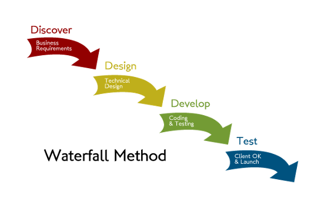
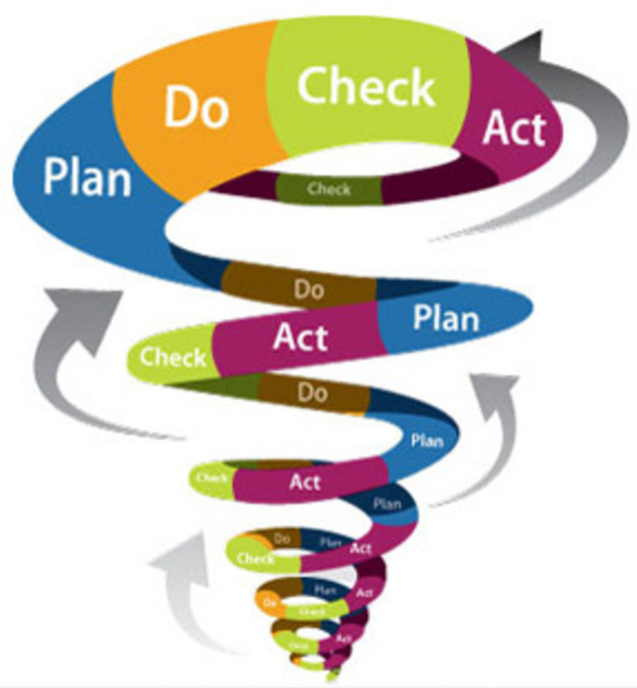
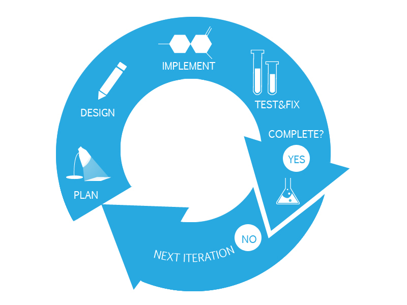

Project Development techniques
Waterfall development
Brief -> Requirements -> Design -> Prototyping -> Documentation -> Sharing

Spiral development
Same as the above, just repeated in a cycle, with very fast iterations.
We move to the next phase as soon as we have something to work on the next one. Then repeat.
We always have something working to show.

Agile development
The development is driven by requirements, and works in sprints. Every sprint is related to a number of selected requirements choosen with the customer.
